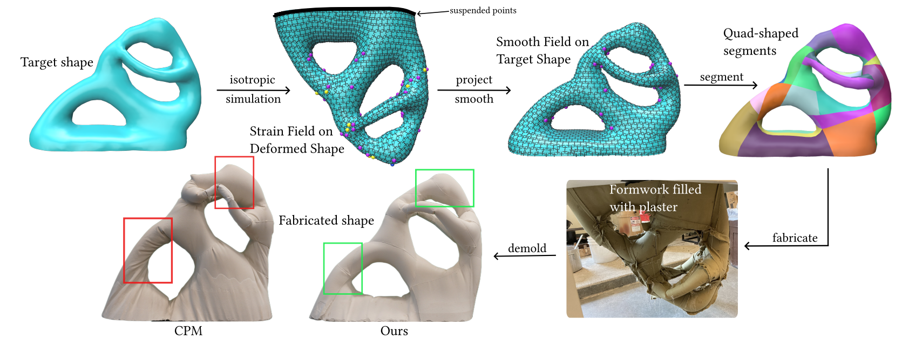
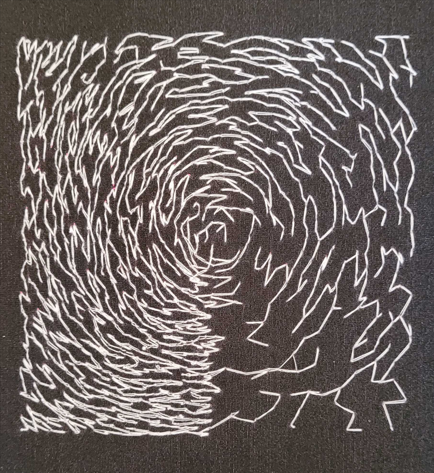

I'm a Computer Science PhD student at Boston University advised by Dr. Emily Whiting and co-advised by Dr. Edward Chien. My primary research focus is solving problems in the domain of computational fabrication — specifically, developing computational methods to improve the efficiency and performance of physical artifacts. Before heading to Boston, I got my Master's degree in Computer Science from Clemson University with a focus on Visual Computing, where I was supervised by Dr. Victor Zordan and Dr. Ioannis Karamouzas. I got my undergraduate degree in Computer Science from University of Mumbai in 2019.

Eurographics 2026

Master's Thesis, Clemson University